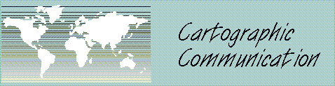

These materials were developed by Kenneth E. Foote and Shannon
Crum, Department of Geography, University of Texas at Austin,
1995. These materials may be used for study, research, and
education in not-for-profit applications. If you link to
or cite these materials, please credit the authors, Kenneth E.
Foote and Shannon Crum, The Geographer's Craft Project,
Department of Geography, The University of Colorado at
Boulder. Graphics revised by Natalia Vorotyntseva. at the
University of Connecticut. These materials may not be copied to
or issued from another Web server without the authors' express
permission. Copyright © 2000-2015. All commercial
rights are reserved. If you have comments or suggestions,
please contact the author or Ken Foote at ken.foote@uconn.edu.
This page is available in a framed version. For convenience a Full Table of Contents is
provided.
1. The Value of Maps
Maps are perhaps as fundamental to society as language and the
written word. They are the preeminent means of recording and
communicating information about the location and spatial
characteristics of the natural world and of society and culture.
Some would say that the use of maps distinguishes geography from all
other disciplines. The truth is that maps, though of special concern
to geographers, are used throughout the sciences and humanities and
in virtually every aspect of day-to-day life. Millions of maps are
produced and used annually throughout the world by scientists,
scholars, governments, and businesses to meet environmental,
economic, political, and social needs. Many cartographers have
reflected on the important role played by maps in society. One of
the most recent statements worth considering is Denis Wood's book The
Power of Maps (New York: Guilford Press, 1992).
Maps gain their value in three ways:
1.1 As a way of recording and storing
information
1.2 As a means of analyzing locational
distributions and spatial patterns
1.3 As a method of presenting information and
communicating findings
To realize this potential, it is useful to learn some basic
principles of cartographic communication and map design. Cartography
is a special type of communication that does require training. But,
attention invested in learning the basics will pay off handsomely in
the production of more effective maps. Sometimes people assume that
such training is too highly technical to be mastered easily and
forego the use of maps. This is unfortunate because maps could be
used more widely in the natural sciences, social sciences, and
humanities for analysis and communication, particularly now that
computers can be used as an aid to production. Some attention to
first principles is still warranted. Apart from the following notes,
you may wish to consult:
- Crampton, Jeremy W. 2010. Mapping: A critical
introduction to cartography and GIS. New York:
Wiley-Blackwell.
- Cuff, David J. and Mattson, Mark T. 1982. Thematic Maps:
Their Design and Production. New York: Methuen.
- Dent, Borden D. 1985. Principles of Thematic Map Design.
Reading,
Mass.: Addison- Wesley Publishing Co.
- Dent, Borden D. 2009. Cartography: thematic map design
6th ed. New York: McGraw-Hill Higher Education.
- Klanten, Robert, Sven Ehmann, and Floyd Schulze (eds). 2011.
Visual Storytelling: Inspiring a New Visual Language.
Berlin: Gestalten.
- Klanten, Robert, Bourquin, Nicholas, Ehmann, Sven, van
Heerden, F. and Tissot, Thibaud. (eds). 2008. Data Flow:
Visualising Information in Graphic Design. Berlin:
Gestalten.
- Monmonier, Mark . 1993. Mapping it Out: Expository
Cartography for the Social Sciences and Humanities. Chicago:
University of Chicago Press. A very readable introduction to the
principles of cartography aimed particularly at students and
scholars who have had little training in geography or
cartography.
- Muehrcke, Phillip C. 1986. Map Use: Reading, Analysis,
and Interpretation, 2nd ed. Madison, Wis.: JP
Publications.
- Kimerling, A. J., Buckley, A. R., Muehrcke, P. C., Muehrcke,
J. O. 2012. Map use: reading, analysis, interpretation.
Redlands, Calif.: Esri Prress Academic.
- Krygier, John and Denis Wood. 2011. Making maps: A visual
guide to map design for GIS, 2nd ed. New York: Guilford
Press.
- Peterson, Gretchen N. 2009. GIS cartography: a guide to
effective map design. Boca Raton: CRC Press.
- Robinson, Arthur H., Joel L. Morrison, Phillip C. Muehrcke,
A. Jon Kimerling, and Stephen C. Guptill. 1995. Elements of
Cartography, 6th ed. New York: John Wiley and Sons. This
is the classic textbook, recently revised to reflect the
tremendous changes in cartographic production resulting from
widespread adoption of computer-based techniques and GIS.
- Segel, Edward and Jeffrey Heer. 2010. Narrative
Visualization: Telling Stories with Data. IEEE Transactions
on Visualization & Computer Graphics 16(6): 1139 -
1148.
- Slocum, Terry A., McMaster, Robert B., Kessler, Fritz C.,
Howard, Hugh H. 2009. Thematic cartography and
geovisualization. 3rd ed. Upper Saddle River, NJ: Pearson
Prentice Hall.
- Tufte, Edward R. 1997. Visual Explanations: Images and
Quantities, Evidence and Narrative. Cheshire, CT: Graphics
Press.
Go on to Cartography as
Communication
Return to Table of Contents
{kind=link}
{kind=link}
{kind=link}